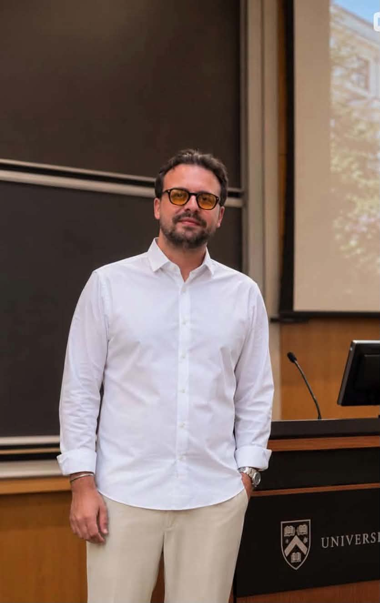

Επιστημονική Ομάδα
Δρ. Αλέξανδρος Νεοφύτου, MD
Κλινικος Ψυχιατρος
Απόφοιτος της Ιατρικής Σχολής του Εθνικού και Καποδιστριακού Πανεπιστημίου Αθηνών, με ειδικότητα στην Κλινική Ψυχιατρική και μετεκπαίδευση στο King's College του Λονδίνου.
Εξειδίκευση: Διαχείριση κρίσεων πανικού, ψυχολογία της μάζας, και αντιμετώπιση ομαδικής υστερίας σε συνθήκες υψηλής πίεσης.
Εμπειρία: Έχει διατελέσει σύμβουλος σε οργανισμούς ασφαλείας για την πρόληψη επιθετικών συμπεριφορών σε μεγάλες συγκεντρώσεις και αθλητικά γεγονότα. Αριθμός Μητρώου ΙΣΑ: 045892.

Δρ. Δημήτριος Μάνος, PhD
Ερευνητης Κοινωνιολογος
Διδάκτωρ Κοινωνιολογίας του Παντείου Πανεπιστημίου, με μεταπτυχιακές σπουδές στην Κοινωνική Έρευνα (MSc Social Research) στο LSE.
Εξειδίκευση: Ανάλυση δυναμικής των ομάδων, κοινωνική ταυτότητα και συμπεριφορά οργανωμένων συνόλων (crowd dynamics).
Εμπειρία: Επικεφαλής ερευνών πεδίου με δημοσιεύσεις σε διεθνή περιοδικά. Μελετά ενεργά τις κοινωνικές αντιδράσεις σε χώρους συνάθροισης και την επιρροή του "ανήκειν" στις εξτρεμιστικές τάσεις. Αριθμός Μητρώου ΣΕΚ: 1104.